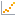

Main Quest · Forecasting

SalesPulse: Forecasting and Analytics
Forecasts weekly retail sales trends from 300K+ historical transaction records using XGBoost and ARIMA models, uncovering seasonal patterns and holiday-driven demand spikes to support inventory and budget planning.
Key Result: Reduced forecasting errors by 23% and cut weekly reporting time from 7+ hours to under 2 hours.